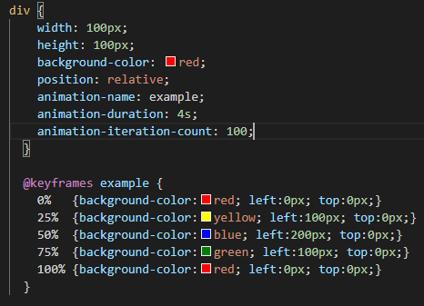

5 years a go, when I had hair and did not know how to code, I spent a significant amount of time trying to learn how to do animations. I downloaded Abode Flash and started to learn the basics of animation. After learning the basics and played with the basic default pre-made shapes from the program, I thought I was ready for the next level. Animate my own drawings. I first tried to make my drawings with the computer mouse. After countless failings and numerous curses to my mouse, I decided to buy a graphic tablet so my drawings would "improve". After spending $70, and cursing my graphic tablet, I came to the realization that I suck at drawing and animating.
Today I have learned that I wasted time and money trying to make animations out my own drawings. There is a much easy way to do it. I just needed to learned CSS. Yes! animations can be done with CSS. CSS is capable to do very complex and interesting animations. From color changes to complex movements. With CSS, you can really do pretty much anything if you have creativity. With CSS you can custimize keyframes, animation delay, duration, specify how many time you want an action to repeat, specify directions and much more.
CSS screenshot:
RESULT:
Isn't it cool? Well, this is nothing! It turns out that there are very talented people that have posted their awesome work online. Please take a look at this website, it will be worth your time I promise! If you are a fan of Star Wars you will love this CSS animation. I learned about CSS animations from W3schools.com.